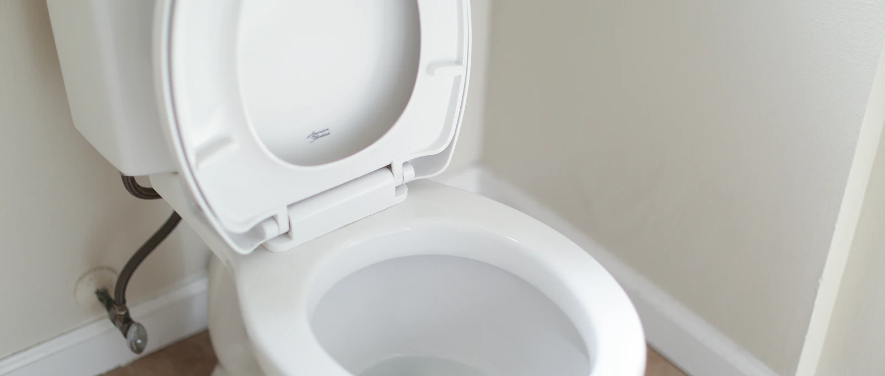

Ce petit sifflement d'eau qui ne s'arrête jamais, ou cette chasse « fantôme » qui repart toute seule la nuit? Votre réservoir fuit vers la cuvette. C'est la réparation de plomberie avec le meilleur rapport effort/récompense qui existe : 20 minutes, des pièces à moins de 25 $, aucun outil spécialisé — le réservoir d'une toilette ne contient que de l'eau propre, au pire vous vous mouillez les manches.
1Deux suspects, pas plus
Soulevez le couvercle du réservoir. Tout ce mécanisme se résume à deux pièces qui vieillissent mal :
- Le clapet (« flapper ») : le disque de caoutchouc au fond, retenu par une chaînette. Usé ou déformé, il laisse fuir l'eau vers la cuvette en continu.
- La valve de remplissage et son flotteur : la colonne qui remplit le réservoir. Mal réglée, l'eau monte trop haut et s'échappe par le tube de trop-plein (le tube vertical ouvert au centre).
- 1 Valve de remplissage
- 2 Flotteur — règle le niveau d'eau
- 3 Tube de trop-plein
- 4 Clapet (« flapper ») — suspect nº 1
- 5 Chaînette — un léger jeu, pas plus
- 6 Levier de chasse
2Le test au colorant (15 minutes, verdict garanti)
- Mettez quelques gouttes de colorant alimentaire (ou un sachet de Kool-Aid, très efficace) dans le réservoir.
- Ne tirez pas la chasse. Attendez 15 minutes.
- La couleur apparaît dans la cuvette? Le clapet fuit → étape 3.
- Pas de couleur, mais l'eau coule quand même? Regardez le tube de trop-plein : si l'eau y déborde, c'est le flotteur → étape 4.
3Remplacer le clapet (10 minutes, aucun outil)
- Fermez la valve d'arrêt derrière la toilette et tirez la chasse pour vider le réservoir.
- Décrochez la chaînette du levier de chasse et déclipsez le vieux clapet de ses ergots.
- Apportez-le à la quincaillerie pour prendre le même format (il existe 2-3 tailles standard, ± 10 $).
- Installez le neuf, raccrochez la chaînette avec un léger jeu — trop tendue, le clapet ne ferme pas; trop lâche, la chasse est paresseuse.
- Rouvrez la valve, laissez remplir, et refaites le test au colorant pour confirmer.
Le clapet a l'air correct? Passez un doigt sur le siège du clapet (l'anneau où il s'appuie) : s'il est rugueux de dépôts minéraux, frottez-le doucement avec une laine d'acier fine. Un siège entartré fuit même avec un clapet neuf.
4Régler le flotteur (2 minutes)
Le niveau d'eau au repos doit se stabiliser à 2-3 cm sous le haut du tube de trop-plein. S'il déborde dedans :
- Flotteur à colonne (le plus courant) : pincez le clip sur la tige et glissez le flotteur vers le bas, ou tournez la vis de réglage sur le dessus.
- Flotteur à boule (les vieilles toilettes) : tournez la vis sur le dessus de la valve, ou pliez très légèrement la tige de laiton vers le bas.
Si la valve de remplissage siffle, crachote ou ne ferme jamais malgré le réglage, remplacez-la au complet : c'est une pièce universelle à ± 20 $, avec des instructions claires dans la boîte, et le même principe que le clapet — valve fermée, réservoir vidé, un écrou sous le réservoir.
Quand appeler? Si l'eau fuit sous la toilette (au plancher), c'est un autre problème — joint de cire ou fissure — et ça mérite un pro rapidement : l'eau qui s'infiltre sous une toilette pourrit le plancher en silence.
Pas envie d'y mettre les mains?
On répare ça en une visite, pièces incluses. Soumission gratuite, prix annoncé avant les travaux.